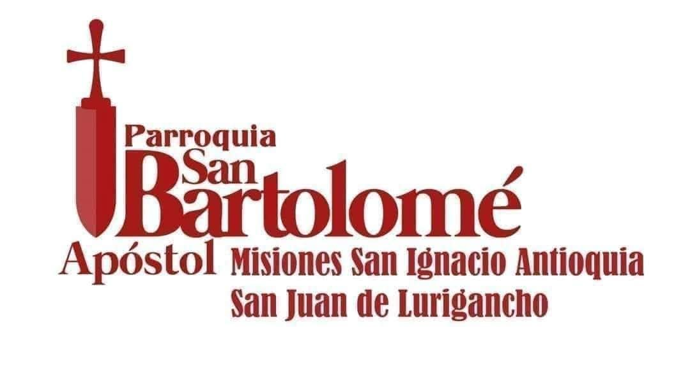

Obra Pastoral
Misiones, obras e instituciones, y proyectos de la Iglesia — con foco en el Perú.
Misiones en el Perú
El Perú es la sede principal y cuna de nuestra misión: aquí se encuentra la Arquidiócesis Metropolitana Primada San Ignacio de Antioquía, sede del Santo Sínodo Mundial. Nuestras misiones incluyen parroquias, comedores, albergues, oratorios, capillas, escuelas, colegios parroquiales, centros de salud y demás instituciones afines.

Regiones con presencia misionera
Parroquias y misiones en Lima

Misiones San Ignacio de Antioquía · San Juan de Lurigancho
Templo de la misión · Lima
Esta sección se presenta con alcance a Perú por el momento.
Obras e instituciones
«Por sus frutos los conoceréis» (Mateo 7,20). Estas son las instituciones que trabajan como brazos extendidos de nuestra Iglesia, bajo la guía del Santo Sínodo Mundial.

Casa de Paz Perú
Obra comunitaria, educativa y pastoral: atención integral a familias vulnerables, adultos mayores y niñez en riesgo, a través de albergues y comedores.

Colegios Parroquiales
Educación en valores y formación integral desde la infancia, sembrando futuro niño por niño.

Corporación Educativa Sagrado Corazón de Jesús y María
Capacitación técnica y formación profesional: educación para el trabajo y la dignidad.

Federación Internacional de Abogados Ortodoxos
Con base de abogados en Lima e integrantes de otros países, brinda asesoría legal gratuita y defensa de los derechos humanos.

Asociación Internacional de Mujeres Católicas Ortodoxas
Liderazgo femenino, educación teológica, empoderamiento y servicio a la comunidad.

Asociación Internacional Heraldos por la Paz
Promoción de valores éticos, cultura de paz y diálogo interreligioso; distinciones de honor por la paz en el Perú.

ONG PRODINJU
Promoción y desarrollo integral de la juventud: formación, prevención y oportunidades.
Formación eclesiástica
Como parte del desarrollo de su misión, la ICAOP creó tres instituciones de estudio para cuidar la formación de clérigos y fieles en la recta doctrina.
Seminario Internacional «Santo Tomás Apóstol»
Formación de los candidatos al sacerdocio. Fundado como Seminario «San Andrés Apóstol», hoy lleva el nombre del Apóstol de las Indias.
Instituto Eclesiástico de Filosofía y Teología «Santo Tomás Apóstol»
Estudios de filosofía y teología para el clero y los fieles que desean profundizar en la fe.
Escuela de Especialización Teológica y Ciencias Religiosas «San Pedro Apóstol»
Especialización teológica y en ciencias religiosas, conforme a la tradición de los Santos Padres.
Si deseas información sobre estudios o vocación sacerdotal, escríbenos desde Contacto.
Proyectos en Perú
Proyectos ejecutados y por ejecutar por la Iglesia en el Perú. Haz clic en "Ver más información" para conocer el detalle y las imágenes de cada uno.